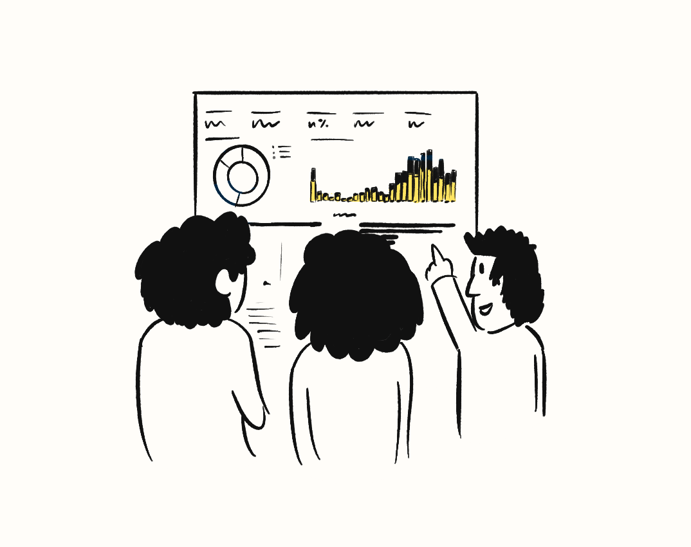
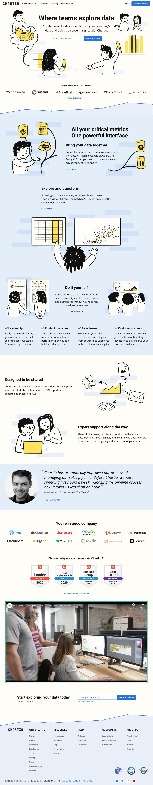
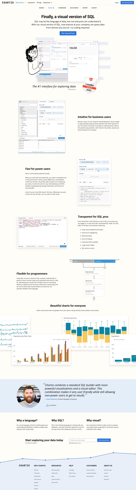
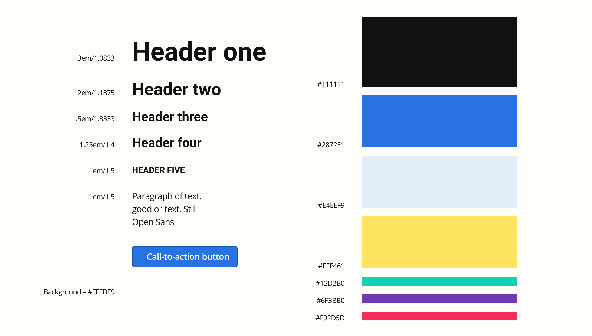
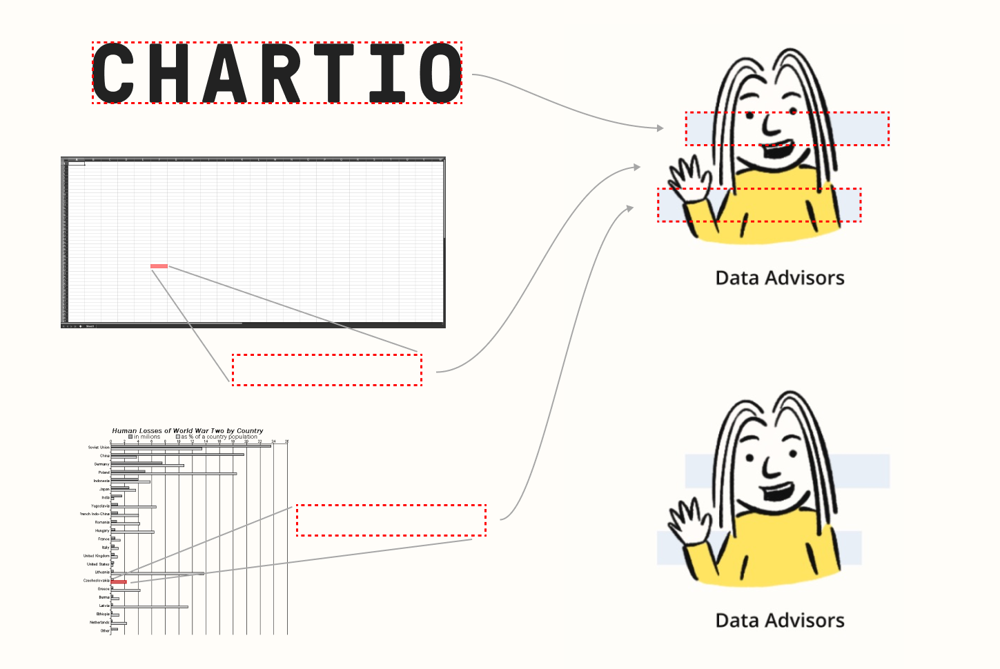
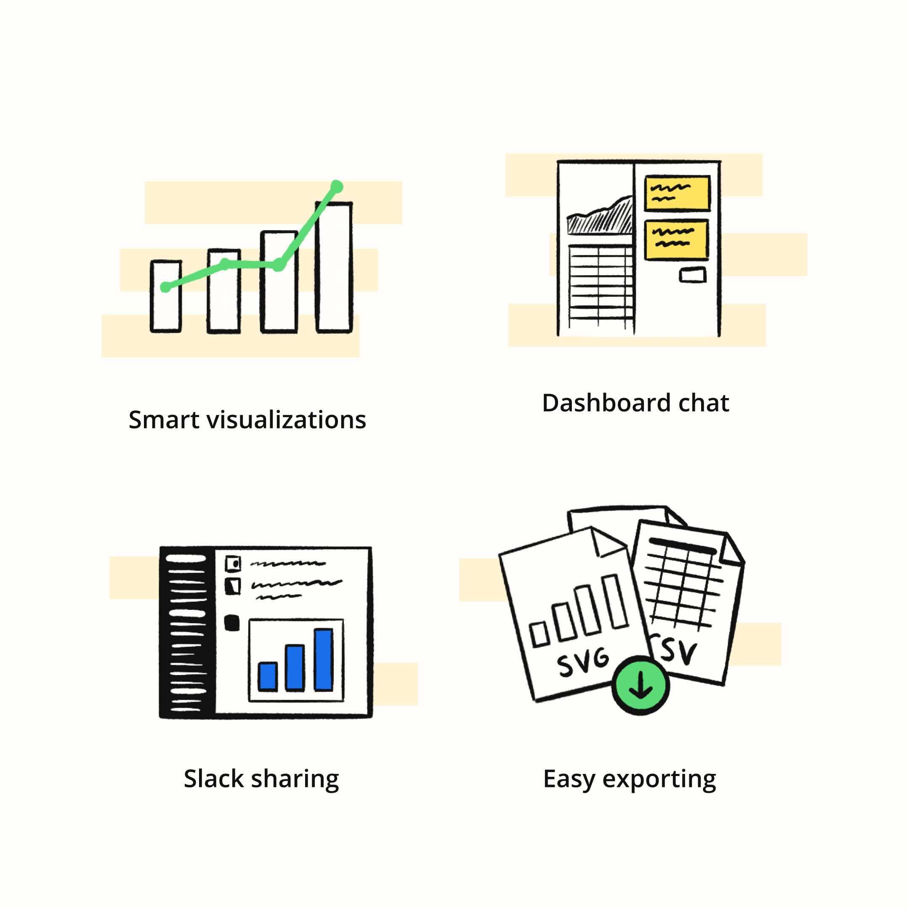
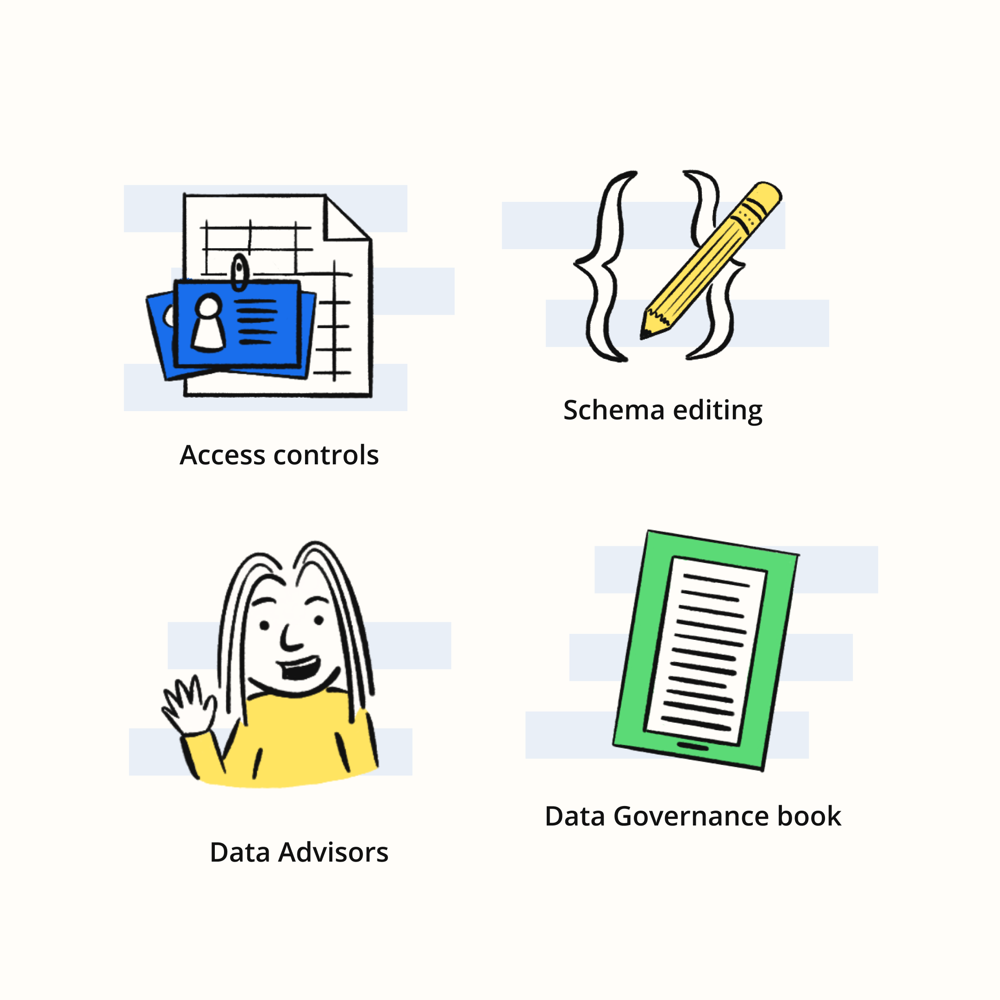
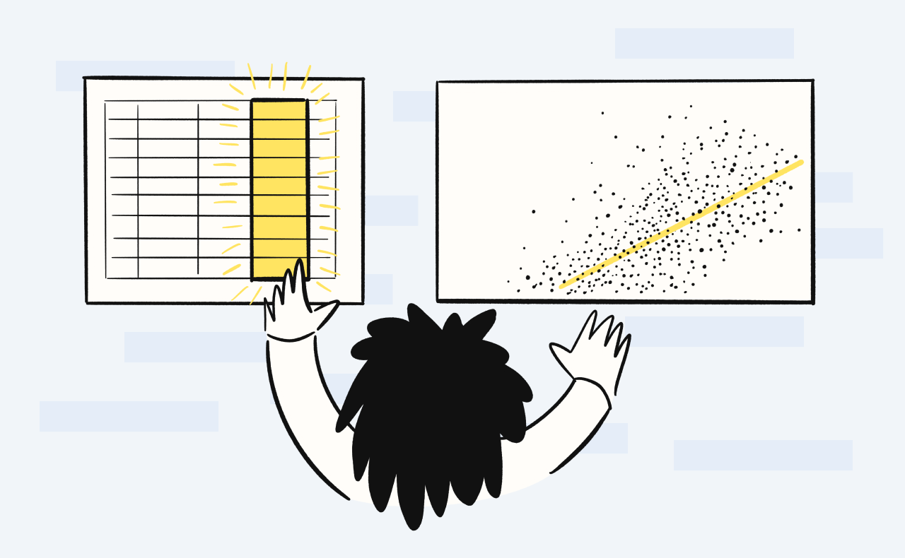

Chartio is a cloud-based data visualization platform for businesses. One of my most recent projects with the company was the second major update to the brand in my time with them (the first being in 2017). In this update I introduced things like hand-drawn illustrations, a new display typeface, and a new color palette to signal an even more intuitive and updated interface for the application.
Chartio website and brand update (2020)
 The Chartio "emblem" using an updated brand blue.
The Chartio "emblem" using an updated brand blue.

Illustration of folks discussing a dashboard highlighting Chartio's collaborative nature.
This update included my second full redesign of the marketing website. Our goal was to both make Chartio even more approachable for all business users while also keeping the appeal of the initial buyer, the data teams.

Chartio.com homepage.
 The top-level Chartio product page.
The top-level Chartio product page.

The product page highlighting "Visual SQL".
In addition to the new illustrations, we gave the site an off-white background to evoke notebooks, paper and classic data visualizations. I also used a repeated rectangular bar shape in the backgrounds to echo the shape of cells of tabular data, bar charts, and even the Chartio logotype.

The updated core style components for the marketing site.
Through this redesign, we maintained our core brand colors of black and white, with a primary blue and accent yellow. However, for the first time since 2014, we updated the primary blue to be slight more saturated and contrast better with the white type in call-to-action buttons. The accent yellow was also tweaked and was useful for adding highlights throughout the illustrations as well as marketing events where standing out is key.

To create a subtle background for the illustrations I used a repeating rectangle based on the shape of the Chartio logo which also echoed data table cells and bar chart bars.

Illustrations used throughout the site.


This graphic was used in several palces as it captures one of the core benefits of Chartio, having a visual interface that makes working with data easy.
This also was a significant update to our copy and messaging. I did a number of users tests at different stages to not only drill into reactions to the new visuals, but also what questions people still had and how they talked about their needs.

You can also check out the first brand update I did with the Chartio team back in 2017.
Thanks for taking a look. Reach out anytime. I hope you’re having a nice day :)